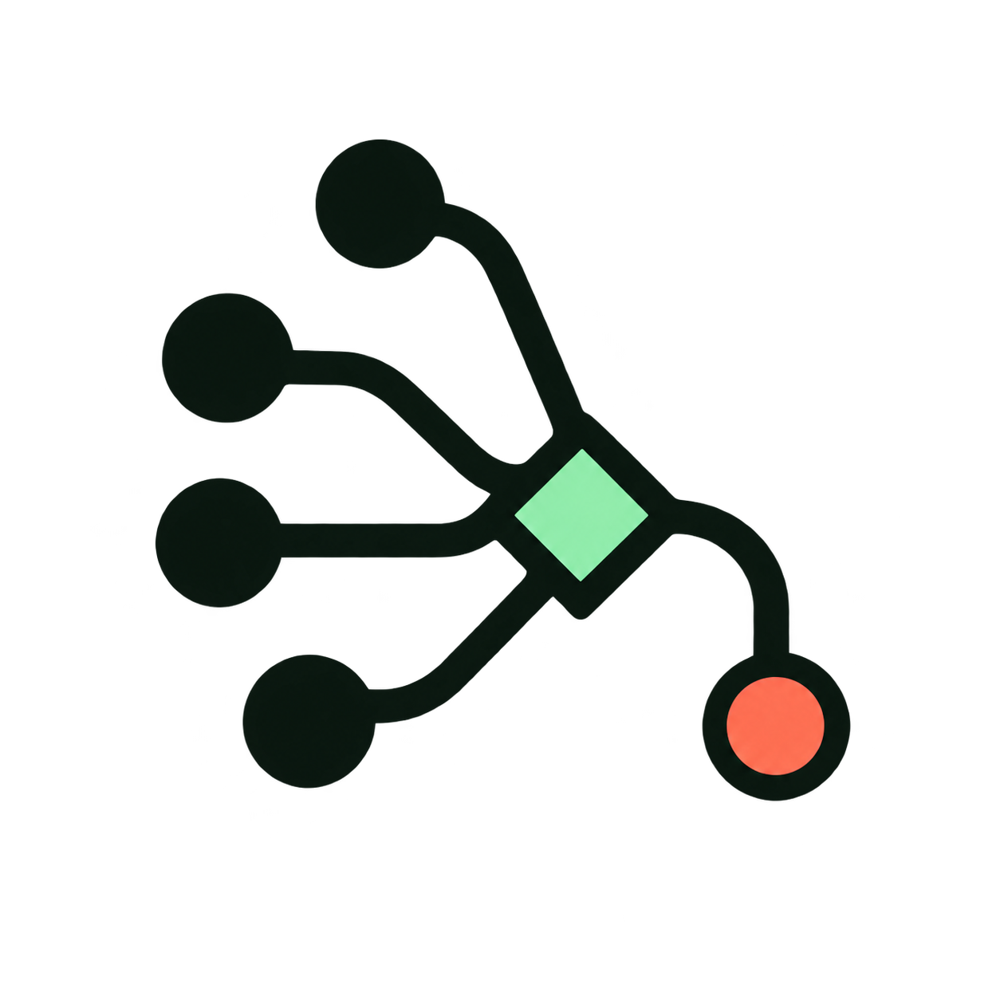

01 / Context Funnel
Many paths. One useful target.
Four graph inputs pass through a reviewed-memory diamond and leave as one precise source node. It tells the whole Jeviphy story without relying on a literal letter.
Selected identity · production SVG complete